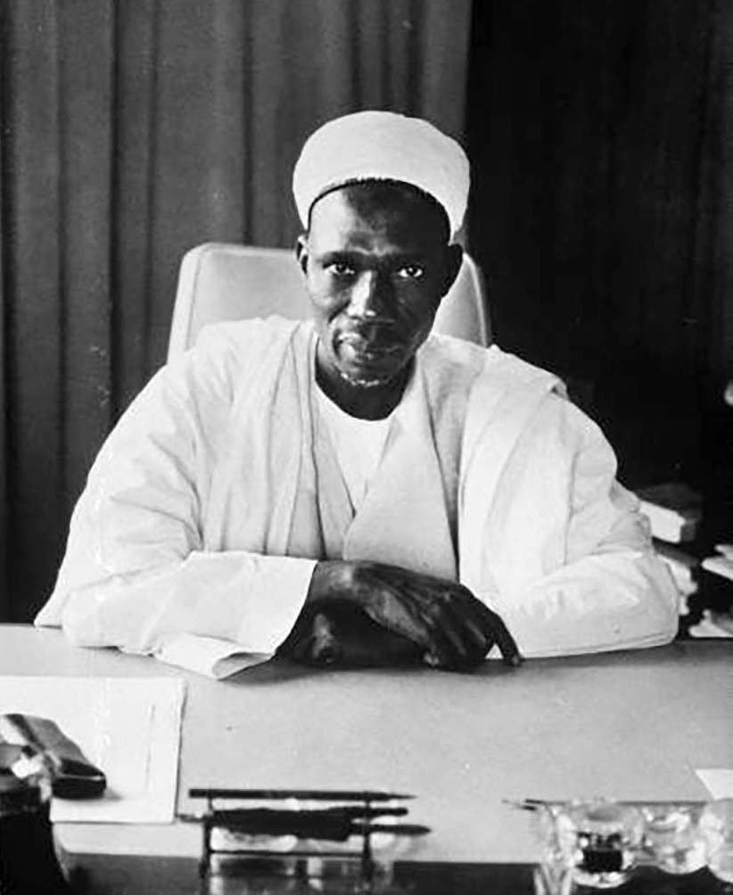

Sir Abubakar Tafawa Balewa
The first prime minister of Nigeria

Sir Abubakar Tafawa Balewa (1912-1966).
This is a time line of Sir Abubakar Tafawa Balewa's life:
- 1912 - Born in Bauchi, Northern Nigeria Protectorate, British Nigeria.
- 1933 - He completed his five-year education.
- 1941 - He became a senior schoolmaster at Bauchi Middle School and later became the headmaster.
- 1944 - Was chosen alongside other educated teachers in the Northern Provinces to study abroad at the University of London's Institute of Education
- 1946 - Elected to the Northern House of Assembly.
- 1947 - Elected into the Legilative Council.
- 1951 - Elected Vice President of Northern People's Congress
- 1952 - He entered the government as Minister of Works.
- 1957 - He became the Prime Minister
- 1964 - Re-elected as Prime Minister.
- 1966 - Overthrown and murdered
Honours Awarded
- 1960 - Knighted by Her Majesty QueenElizabeth II as a knight commander of the order of the British Empire
- 1960 - An honorary doctorate from the University of Sheffield
- 1961 - An honorary doctorate of laws from the New York University
"I am convinced, and i want you also to be convinced, that the future of this vast
country must depend, in the main, on the efforts of ourselves to help ourselves.
This we cannot do if we do not work together in unity."
--Sir Abubakar Tafawa Balewa
--Sir Abubakar Tafawa Balewa